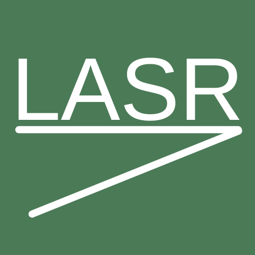
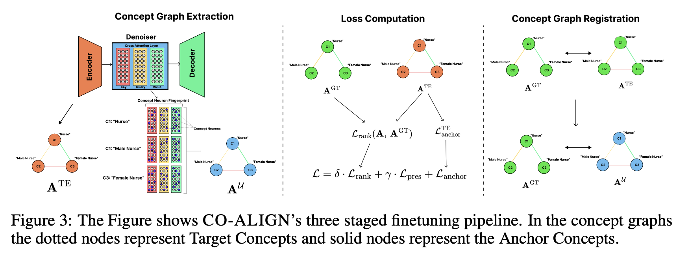
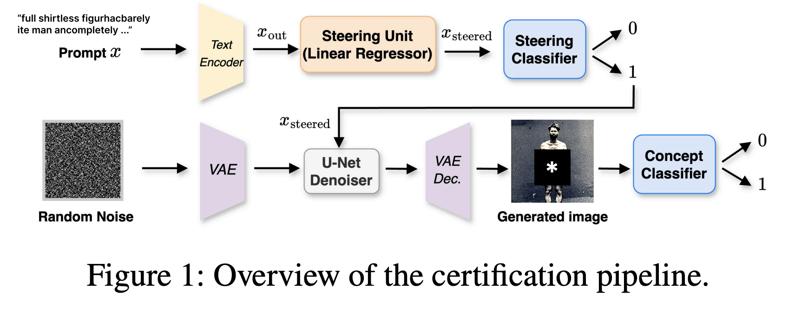
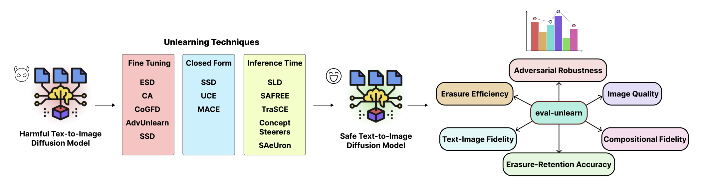
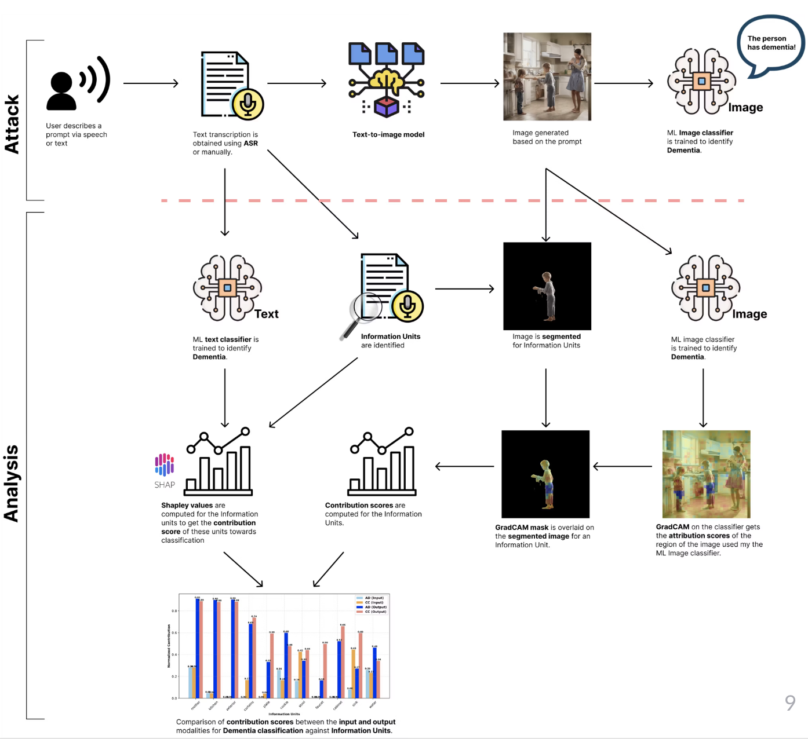
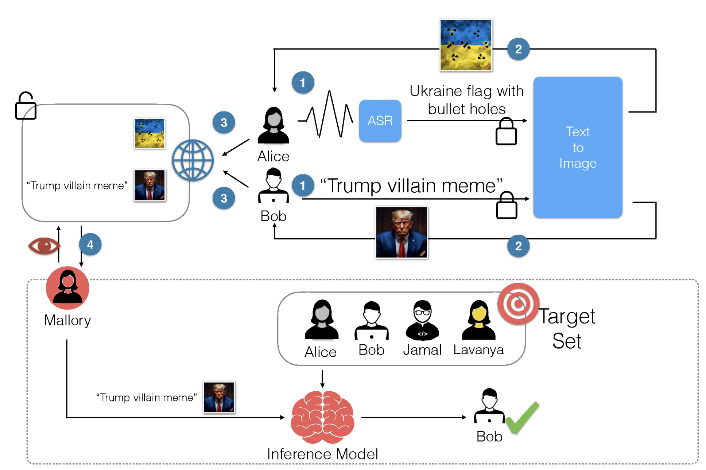
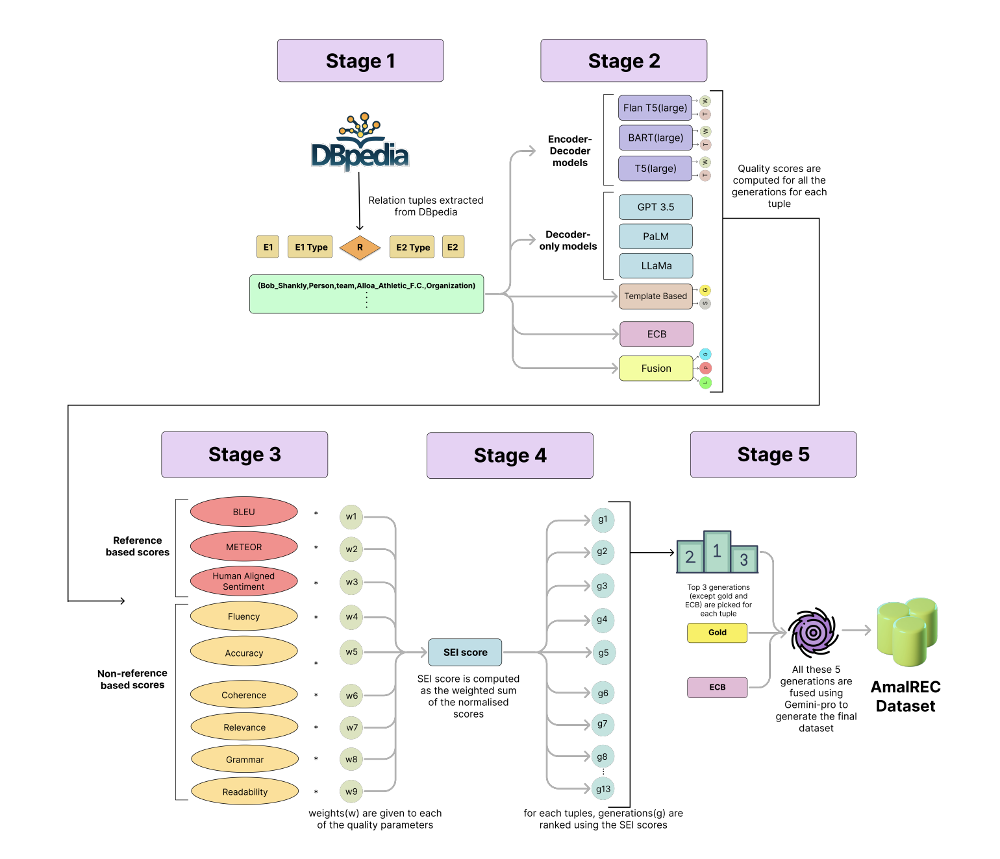
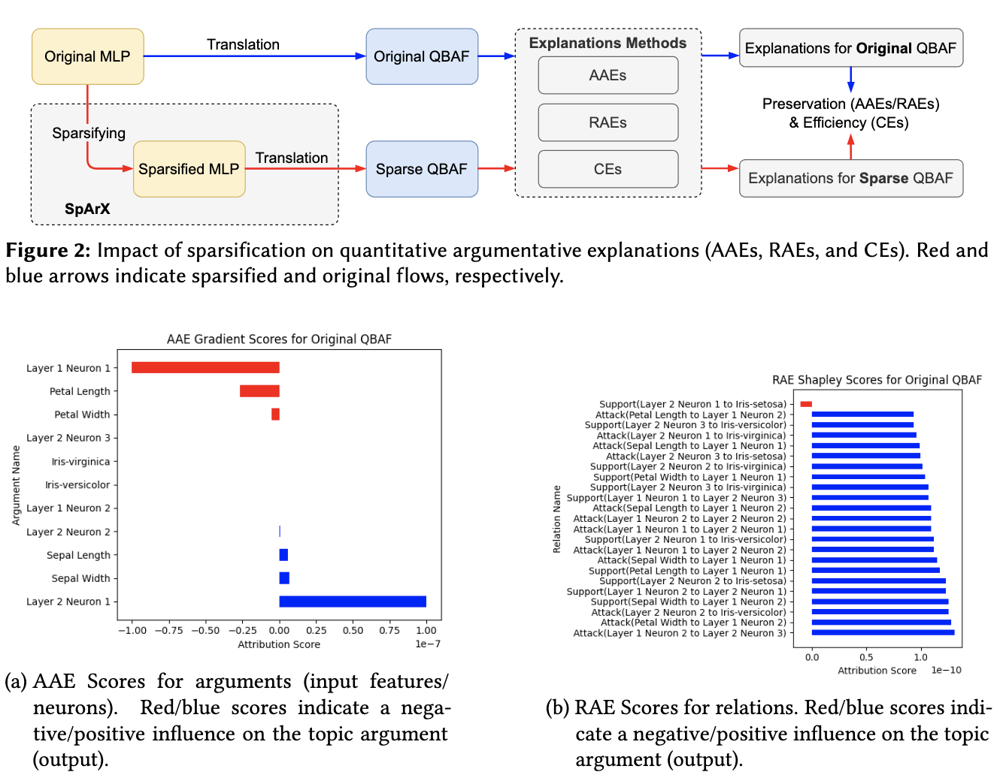

Hi :)
I am a PhD student in Computing at Imperial College London. My research interests include controllable generation, interpretability, and trustworthy AI.
My research focuses on understanding and mitigating risks in generative AI systems with the help of localisation methods to locate concept neurons and leveraging these to extract concept ontologies in generative models. I love studying models' internal representations of concepts and linking them to model behaviours, as this gives room for improving controllability. Around this, my work spans:
- Concept unlearning — removing unsafe or unwanted concepts from text-to-image diffusion models, and auditing how well they are actually removed. (🧹 TRUST, Certified Unlearning, eval-unlearn)
- Bias mitigation — aligning the internal concept ontology of generative models to reduce harmful bias without breaking generation. (⚖️ CO-ALIGN)
- Privacy and attribute leakage — identifying sensitive attributes that leak through text-to-image generation, and building defences. (🔒 Leaky Diffusion, Dementia Speech Alignment)
- Faithful reasoning and explanations — argumentative LLMs whose verdicts are faithful by construction. (💬 ITA, Sparsified QAEs)
I am motivated to work towards improving AI Safety, and therefore, I am actively involved in educating myself with emerging risks and defences. I recently completed an AI Safety Fellowship at LASR Labs. Previously, I completed my MRes in Artificial Intelligence and Machine Learning at Imperial College London, and my B.Tech in Computer Science and Engineering from IIT Guwahati. I also gained valuable industry experience as a Software Engineer at Microsoft.
I'm deeply interested in Mechanistic Interpretability, Explainable AI, and Reinforcement Learning. When I am not experimenting or judging papers 🤓, I enjoy mentoring junior students, playing chess, running, and reading books.
News
- Sep 2026Two papers accepted to NeurIPS 2026 (poster): CO-ALIGN and Neurosymbolic Learning for Inference-Time Argumentation! 🎉
- Sep 2026Released eval-unlearn, an open-source benchmark for concept unlearning in T2I diffusion models. 📦 Docs
- 2026TRUST (Selective Fine-Tuning for Concept Unlearning) accepted to ACM CCS 2026! 🎉
- 2026Serving as a reviewer for AAAI 2027. 📝
- 2026Received the Gold Reviewer Award at ICML 2026. 🏅
- Jan 2026Started the AI Safety Research Fellowship at LASR Labs in London 🇬🇧.
- Oct 2025Started my PhD in Computing at Imperial College London! 🎓
Professional Experience

- B.Tech thesis: built a diverse relation-extraction dataset via a 6-level relation hierarchy.
- DDoS detection and prevention in D2D communications using Random Forest and ns-3.
Education
-
PhD in Computing2025 – Present
-
MRes in Artificial Intelligence and Machine Learning2024 – 2025
-
B.Tech in Computer Science and Engineering2020 – 2024
Selected Publications
* denotes equal contribution

A bias mitigation approach that aligns the model's internal concept ontology across the text encoder and denoiser, improving fairness by 30% while reducing semantically incoherent outputs by 88% and preserving image quality.

ITA is a trainable neurosymbolic framework for true/false/uncertain claim verification. A formal argumentation semantics guides LLMs to generate and score arguments, then computes the verdict from them, so predictions are faithful by construction to explicit, inspectable arguments.

A certification framework that derives high-confidence upper bounds on residual concept leakage after unlearning. Certified bounds exceed attack success rates by 16.2% on average, showing that attack-based evaluations underestimate leakage.

An open-source Python library that benchmarks twelve concept unlearning techniques with nine evaluation metrics under one reproducible framework, plus a public HuggingFace leaderboard.
TRUST dynamically estimates target concept neurons and unlearns them via selective fine-tuning with Hessian-based regularization. It is robust to adversarial prompts, preserves generation quality (∆FID = 0.02), and runs significantly faster than prior methods.

We investigate how text-to-image generation can inadvertently reveal markers of cognitive decline from dementia speech, with implications for privacy in healthcare applications.

We analyze attribute leakage paths in text-guided diffusion models and introduce a new authorship identification attack, highlighting privacy risks in current generative AI systems.

A relation extraction dataset built by combining LLM-based and template-based generation over a 6-level relation hierarchy, with an analysis of bias and noise across relation buckets.

We study how sparsification affects the quality and interpretability of quantitative argumentative explanations of neural networks.
Teaching Activities
Academic Service
Projects
Achievements
- Departmental PhD Scholarship, Imperial College London.
- 3rd prize at Imperial Computing Conference for work on attribute leakage.
- India Future Leaders and Anne Seagrim Scholarships.
- Grace Hopper Celebration Scholarship 2024 & 2025.
- Microsoft Engage mentee; received full-time role offer.
- Barclays Global Student Discovery Program: top 10 sophomores.
- KVPY National Research Fellowship (AIR 219).
- JEE Main: AIR 1 in Physics; AIR 439 overall.
- JEE Advanced: AIR 1450.
- ICPC: AIR 93.
- Flipkart Grid 4.0: Top 3% among 50k+ teams.
- National Standard Examination in Physics: top 1% nationwide.
- Regional Mathematics Olympiad qualifier (top 5%).
- Technothlon Silver Medalist (AIR 239).
Extracurricular
- Poster designer — examples.
- Football — Silver medal in Spardha inter-hostel championship.